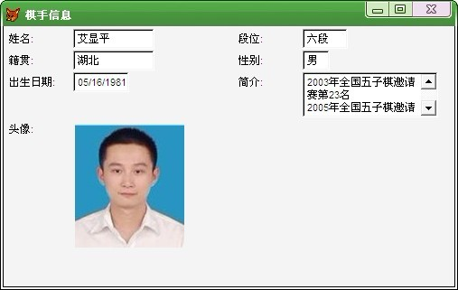

有管理棋手资料的软件吗
首页
裁判&规则
#1 有管理棋手资料的软件吗 作者：何柔 发表时间：2013-4-6 19:13:47
有管理棋手资料的软件吗...
#2 Re:有管理棋手资料的软件吗 作者：三道 发表时间：2013-4-9 8:34:51
EXCLL
#3 Re:有管理棋手资料的软件吗 作者：何柔 发表时间：2013-4-9 22:01:24

#4 Re:有管理棋手资料的软件吗 作者：华夏小宝 发表时间：2013-4-10 13:25:03
可以用VFP软件开发一个啊。
#5 Re:有管理棋手资料的软件吗 作者：何柔 发表时间：2013-4-10 23:13:12
不懂哎...
你做一个吧，主要方便管理人员资料的，对你来说应该不难。
#6 Re:何柔【==Re:有管理棋手资料的软件吗==】 作者：华夏小宝 发表时间：2013-4-12 14:28:11
这个可以。只是需要一段时间研发。
你能提供一个基础的界面结构图么？
#7 Re:有管理棋手资料的软件吗 作者：小丸.net 发表时间：2013-4-12 16:18:49
我可以提供给你五子棋棋手数据库
#8 Re:何柔【==Re:有管理棋手资料的软件吗==】 作者：华夏小宝 发表时间：2013-4-12 18:15:42
这个结构可以么？还要不要增加什么模块的
颜色以后调
